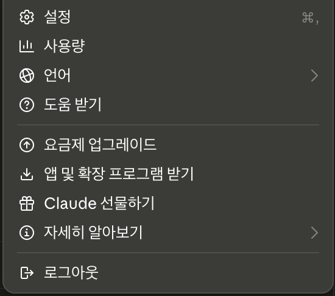
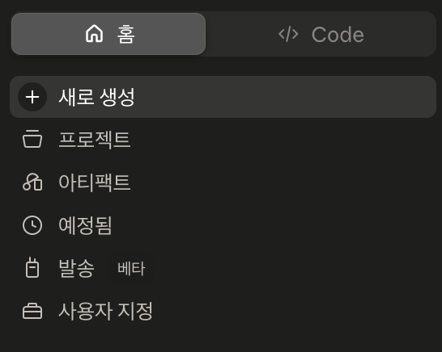
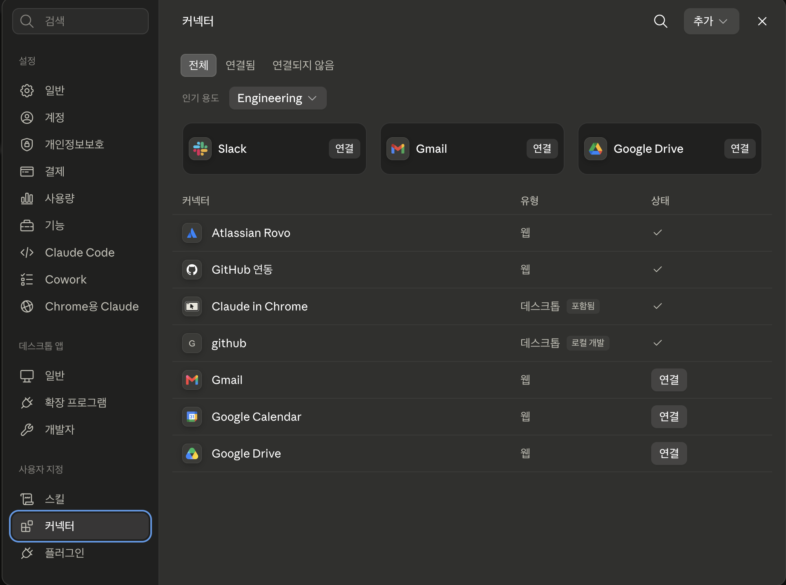
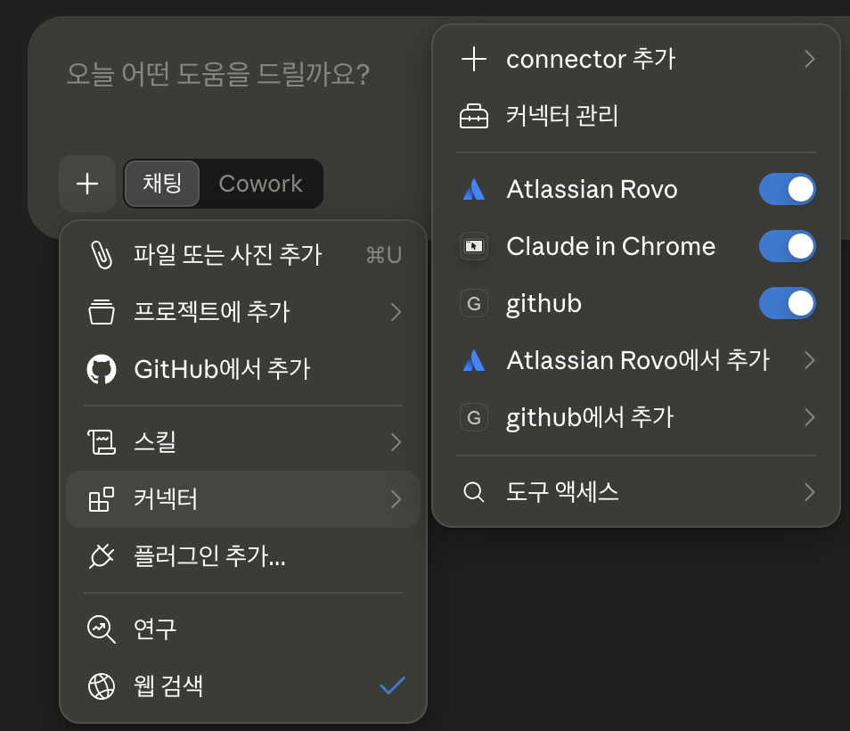

기본 커넥터 ― Atlassian·GitHub¶
설정 파일을 만지지 않고 화면에서 로그인하고 승인하는 것만으로 이미 쓰고 있는 서비스를 AI에 연결하는 방법입니다.
커넥터는 Claude가 미리 준비해 둔 연결 목록입니다. 목록에서 서비스를 고르고, 평소처럼 로그인한 뒤, 어떤 자료에 접근할지 확인하고 승인하면 연결이 끝납니다. 준비된 것을 고르고 연결하기만 하면 되어서 비개발자에게 가장 문턱이 낮은 방법입니다.
이 페이지에서는 Atlassian(Jira·Confluence)과 GitHub을 예로, 연결하고 해제하는 절차와 승인 화면에서 반드시 확인해야 할 것을 다룹니다. 업무 자료를 다루는 연결은 대개 Atlassian 쪽이 먼저이고, GitHub은 연결할지부터 판단이 갈리는 도구라 뒤에 두었습니다.
커넥터는 새로 만드는 게 아닙니다¶
1부에서 이미 나온 이야기입니다
1부 기본 용어 ― 하네스는 결국 "내가 세팅하는 것들"에서 하네스의 출처를 셋으로 나눴고, 그중 "고르고·연결만 하는 것" 칸에 외부 서비스 연결이 있었습니다. 커넥터가 바로 그 칸의 실물입니다.
통로를 만드는 일은 서비스를 만든 쪽과 Anthropic이 이미 해 두었습니다. 내 몫은 고를 것을 고르고, 무엇을 허용할지 정하는 것입니다.
그래서 커넥터를 쓰는 데 필요한 건 기술이 아니라 판단입니다. 어떤 서비스를 연결할지, 어디까지 허용할지, 결과를 어떻게 확인할지, 이 세 가지만 정하면 됩니다.
연결하는 순서¶
커넥터 화면으로 가는 길은 두 가지이고, 어느 쪽으로 들어가도 같은 화면이 열립니다.
① 왼쪽 아래 내 이름 → 설정 → 커넥터

② 왼쪽 위 홈 탭 → 사용자 지정 → 커넥터

도착하는 곳은 아래 화면입니다. 왼쪽 목록 아래쪽 사용자 지정 → 커넥터 메뉴이고, 이미 연결해 둔 서비스를 점검할 때도 같은 화면을 씁니다.

이미 연결한 서비스는 상태 열에 체크 표시가, 아직 연결하지 않은 서비스는 연결 버튼이 보입니다. 목록에 없는 것을 등록하는 오른쪽 위 추가는 MCP 서버 쪽 이야기라 여기서는 쓰지 않습니다.
이미지는 Claude Desktop 화면이며, 앱이 업데이트되면 조금 달라질 수 있습니다.
대화 도중이라면 여기서도 열립니다
대화창 왼쪽 아래 + 버튼(또는 / 입력)을 누르고 커넥터에 마우스를 올리면, 설정으로 나가지 않고 대화창에서 바로 열립니다.

- connector 추가: 목록에 없는 것을 직접 등록하는 메뉴입니다. 여기서는 쓰지 않고 MCP 서버에서 다룹니다.
- 커넥터 관리: 위에서 본 커넥터 화면이 그대로 열립니다.
- 서비스별 토글: 지금 이 대화에서 쓸 것만 켭니다 (→ 아래 5번).
- 도구 액세스: 켜 둔 커넥터를 언제 불러올지 정합니다 (→ 바로 아래 「쓸 만큼만 켜 두세요」).
이 화면까지 왔다면 다음부터는 어느 서비스든 같습니다.
- 고르기: 원하는 서비스를 누르고, 설명과 할 수 있는 일을 읽습니다.
- 연결 시작: 연결(또는 설치) 버튼을 누릅니다.
- 로그인: 그 서비스의 평소 계정으로 로그인합니다. 새 계정을 만들 필요는 없습니다.
- 권한 승인: 어떤 자료에 접근할지 화면에 나옵니다. 여기서 멈춰 읽으세요 (→ 바로 아래).
- 대화에서 켜기: 연결했다고 항상 쓰이는 건 아닙니다.
+버튼 → 커넥터에서 해당 서비스의 토글을 켜면 그 대화에서 사용됩니다.
쓸 만큼만 켜 두세요
같은 메뉴의 도구 액세스에서 켜 둔 커넥터를 언제 불러올지 세 가지 중 고를 수 있습니다.
- 자동(기본값): 지금 하는 일에 맞춰 Claude가 필요한 것만 불러옵니다. 대부분은 이대로 두면 됩니다.
- 항상 사용 가능: 켜 둔 커넥터를 대화 시작 때 전부 불러옵니다. 몇 개를 늘 쓰는 경우에 편합니다.
- 필요할 때: 찾아야 할 상황이 되면 그때 불러옵니다. 연결이 많아 대화가 무거워질 때 씁니다.
켜 둔 커넥터가 많을수록 AI가 엉뚱한 곳을 뒤질 여지도 늘어나니, 어느 모드든 지금 하는 일에 필요한 것만 켜는 편이 결과도 깔끔합니다. 고르는 기준은 Claude의 도구 접근 관리에 정리돼 있습니다.
공식 안내: 커넥터를 사용하여 Claude의 기능 확장하기. 화면이 바뀌면 이쪽이 기준입니다.
승인 화면에서 확인할 것¶
연결 과정에서 가장 큰 결정이 일어나는 곳입니다. 세 가지만 보세요.
| 확인할 것 | 왜 보나요 | 어떻게 하나 |
|---|---|---|
| 읽기만인가, 쓰기도 되는가 | 읽기는 자료를 가져오는 것이고, 쓰기는 그 서비스에 흔적을 남기는 것입니다 (문서 생성, 이슈 코멘트 등) | 쓰기를 빼고 고를 수 있으면 빼고 승인합니다 |
| 어느 범위까지인가 | 저장소 전체인지 일부인지, 어느 프로젝트·스페이스인지 | 좁혀서 고를 수 있으면 필요한 만큼만 고릅니다 |
| 누구의 권한으로 실행하는가 | 커넥터는 내 계정 권한을 그대로 씁니다 | 내가 볼 수 없는 자료는 AI도 못 봅니다. 반대로 내가 볼 수 있는 것까지가 AI에게 열릴 수 있는 가장 넓은 범위입니다 |
승인 화면이 무엇을 고르게 해 주는지는 서비스마다 다릅니다. 저장소나 스페이스를 골라 승인하게 하는 곳도 있고, 읽기와 쓰기를 묶어 한 번에 승인받는 곳도 있습니다. 화면에 선택지가 없다면 그 화면에서 줄일 방법이 없다는 뜻이니, 다음 두 가지로 대신 줄입니다.
- 대화에서 켤 때 줄이기: 지금 하는 일에 필요한 커넥터만 토글을 켭니다. 켜지 않은 연결은 그 대화에서 쓰이지 않습니다.
- 물어볼 때 줄이기: AI가 쓰기 작업 승인을 물어오면 지금 필요하지 않은 것은 거절합니다.
「내 권한 그대로」는 안심과 경고를 같이 줍니다
권한이 새로 생기지 않는다는 점은 안심할 만합니다. 하지만 내 계정이 회사 자료 대부분에 접근할 수 있다면, 연결한 AI에게 열릴 수 있는 범위도 그만큼 넓어집니다. "나는 권한이 넓은 편인가"를 한 번 떠올려 보고, 넓다면 승인 범위든 대화에서 켜는 범위든 한 단계 줄여 두세요.
회사 자료가 오가는 연결의 기준은 보안 및 개인정보 가이드 ― 외부 연결에 정리돼 있습니다.
Atlassian ― Jira와 Confluence¶
Confluence는 회의록·규정·기획서 같은 문서를, Jira는 업무 요청과 진행 상황을 다루는 도구입니다. 둘 중 하나라도 쓰고 있다면 비개발자가 복사·붙여넣기를 가장 자주 반복하는 일이라, 연결 효과를 빨리 체감하는 커넥터입니다.
Confluence ― 읽고 정리하기
- "지난주 팀 회의록을 찾아 결정사항만 정리해 줘"
- "휴가 규정 문서를 읽고 신입이 자주 묻는 질문 형태로 바꿔 줘"
- "이 스페이스에서 「출장」이 언급된 문서를 찾아 목록으로 줘"
Jira ― 상태 파악하기
- "내 담당 이슈 중 이번 주 마감인 것만 골라 정리해 줘"
- "이번 스프린트에서 아직 안 끝난 항목을 묶어 보고용 초안을 써 줘"
- "이 이슈의 지금까지 논의를 세 줄로 요약해 줘"
Atlassian 커넥터는 읽기와 쓰기를 모두 지원합니다. Confluence 페이지를 새로 만들고 Jira 이슈에 코멘트를 남기는 일까지 가능하다는 뜻입니다. 편리한 만큼, 팀 전체가 보는 공간에 결과가 그대로 남는다는 점을 잊기 쉽습니다.
AI가 쓴 것도 내 이름으로 팀에 공개됩니다
내 계정으로 연결했으니 AI가 만든 문서나 코멘트도 내가 쓴 것으로 올라갑니다. 초안을 만들게 하되 올리기 전에 직접 읽고 고치는 단계를 반드시 두세요. 이것이 메타 원칙 ③ AI 결과물 검토·이해 의무가 연결 이후에 더 중요해지는 이유입니다.
처음 몇 번은 읽기만 시켜 보고, 쓰기 작업 승인을 물어오면 결과가 믿을 만해질 때까지 거절하는 순서를 권합니다.
접근 범위는 여기서도 내가 이미 가진 Jira·Confluence 권한을 그대로 따릅니다. 내게 안 보이는 스페이스는 AI에게도 안 보입니다.
GitHub ― 소스코드를 관리하는 곳¶
GitHub은 기본적으로 소스코드를 보관하고 변경 이력을 관리하는 도구입니다. 개발 과정에서 생긴 문서와 이슈가 함께 쌓이기는 하지만, 그것이 이 도구의 본래 용도는 아닙니다. 그래서 비개발자가 연결할지는 앞의 Atlassian과 달리 어느 쪽에 해당하느냐에 따라 판단이 갈립니다.
학생·일반인: 읽기만이라면 연결하지 않아도 됩니다
코드를 읽고 배우는 단계라면 GitHub만 한 자료실이 없습니다. 다만 공개 저장소는 계정 없이도 볼 수 있어서, 관심 있는 프로젝트의 README나 이슈를 읽는 정도는 주소를 알려 주고 물어보면 됩니다. 커넥터를 붙일 일이 아닙니다.
커넥터가 필요해지는 것은 로그인과 권한 확인이 필요한 일입니다. 로그인해야 보이는 비공개 저장소를 읽거나, 공개 저장소라도 이슈·PR에 코멘트를 남기는 일이 그렇습니다.
이 교육의 실습 자료도 공개 저장소에 두었습니다 (→ 실습 자료).
임직원: 업무 도구가 따로 있다면 연결하지 않는 쪽을 권합니다
회사에 이슈와 업무를 관리하는 도구(Jira·Confluence 등)가 따로 있다면, 비개발자가 GitHub까지 연결할 이유는 대개 없습니다. 개발자와 비개발자가 함께 봐야 하는 내용이라면 그 도구에서 관리하는 편이 양쪽 모두에게 낫습니다.
사내에서 운영하는 GitHub Enterprise는 조건이 더 까다롭습니다. 공개로 열어 둔 저장소라도 로그인해야 볼 수 있고, 계정마다 라이선스 비용이 붙어 비개발자에게 계정을 내주는 것 자체가 회사의 판단 사항입니다.
커넥터는 로그인과 권한 확인이 필요한 일에 쓰는 수단입니다. 회사 자료를 다루는 연결에 공통으로 걸리는 기준(플랜·관리자 정책)은 다른 커넥터와 같습니다 (→ 연결 보안 기준).
연결하기로 정했다면 다룰 수 있는 범위는 이렇습니다. GitHub 커넥터는 저장소와 코드 파일을 읽고, 이슈·PR을 다루는 범위까지 지원합니다. 쓰기까지 허용하면 이슈 코멘트를 남기는 일도 가능합니다. 읽기만 필요한 용도라면 승인 화면에서 접근할 저장소를 필요한 것만 고르고, 쓰기 작업 승인을 물어올 때 거절하는 쪽으로 좁히세요. 정확한 지원 범위는 커넥터 목록에서 GitHub 항목을 눌렀을 때 나오는 설명이 기준이니, 연결 전에 한 번 읽어 두세요.
이런 부탁이 됩니다
- "지난달에 닫힌 이슈들을 훑어서 무엇이 바뀌었는지 항목별로 정리해 줘"
- "README와 최근 릴리스 내용을 비교해서 안내문에서 낡은 문장을 찾아 줘"
저장소를 프로젝트에 통째로 붙이는 별도 경로도 있습니다
커넥터와 별개로, 대화창 + 버튼의 GitHub에서 추가로 저장소를 프로젝트 자료에 붙여 둘 수 있습니다. 이쪽은 지정한 브랜치의 파일 이름과 내용만 가져오며 커밋 이력·이슈·PR 같은 기록은 가져오지 않습니다 (이 경로의 공식 안내: GitHub 통합 사용하기).
같은 자료를 매번 물어본다면 프로젝트에 붙여 두는 쪽이, 그때그때 찾아 읽어야 한다면 커넥터 쪽이 편합니다.
비공개 저장소라면 GitHub 쪽에서 앱 접근을 승인해야 하고, 조직이 SSO(회사 계정 통합 로그인)를 쓰면 각자 한 번 더 승인이 필요합니다. 목록에서 저장소가 보이지 않는다면 대개 이 승인이 빠진 것입니다.
연결을 점검하고 끊기¶
연결은 한 번 걸어 두면 잊히기 쉽습니다. 분기에 한 번쯤 점검하는 습관을 권합니다.
사용자 지정 → 커넥터에서 연결된 서비스를 모두 볼 수 있고, 각 서비스마다 연결 해제·설정 변경·권한 확인이 가능합니다. 아래에 해당하면 미련 없이 끊으세요.
- 그때 한 번 쓰고 이후로 쓰지 않은 서비스
- 부서·업무가 바뀌어 더 이상 볼 이유가 없는 자료
- 무엇을 허용했는지 기억나지 않는 연결 (끊어도 필요할 때 다시 연결하면 됩니다)
회사 환경이라면¶
목록에 서비스가 안 보인다면 권한 문제일 수 있습니다
Team·Enterprise 플랜에서는 조직 관리자가 먼저 커넥터를 켜 주어야 구성원이 쓸 수 있습니다. 관리자가 조직 설정에서 커넥터를 팀에 추가하고, 서비스별로 항상 허용 / 승인 필요 / 차단 같은 도구 권한을 정할 수 있습니다.
그래서 목록이 비어 있거나 원하는 서비스가 없다면 내 문제가 아니라 조직 정책일 가능성이 큽니다. 담당 부서에 문의하세요.
연결해도 되는지는 회사 정책이 정합니다
관리자가 켜 둔 목록은 쓸 수 있는 범위를 정한 것이고, 그 안에서 어느 자료를 연결할지는 내가 고릅니다. 커넥터는 내 계정 권한을 그대로 쓰기 때문에, 이 선택에서 회사 자료가 의도치 않게 밖으로 나갈 수 있습니다.
- 어느 계정으로 로그인하는지 봅니다. 회사 자료를 다루는 연결에 개인 계정으로 로그인하면 회사 자료가 개인 공간을 거쳐 나갑니다. 개인 용도 연결에 회사 계정을 쓰는 것도 같은 문제입니다.
- 연결할 자료가 사내 기준에 맞는지 봅니다. 보안 등급이 정해진 문서는 연결로 읽히는 경우에도 그 기준이 그대로 적용됩니다.
- 사내 승인 절차가 있으면 그 절차가 먼저입니다. 목록에 보인다는 것이 승인을 대신하지 않습니다.
회사 업무·자료를 다루는 연결은 회사가 계약한 플랜에서만 진행합니다. 개인 플랜은 무료·유료를 가리지 않고 회사 보안 정책 위반입니다 (→ 연결 보안 기준).
다음으로¶
필요한 서비스가 커넥터 목록에 있었다면 여기까지로 충분합니다. 목록에 없는 도구가 필요하다면 다음 페이지로 넘어가세요.
MCP 서버 이용하기 에서는 준비된 목록 너머의 도구·자료를 연결하는 방법과, 그때 늘어나는 판단의 몫을 다룹니다.